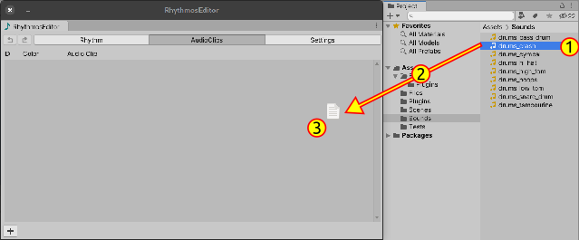
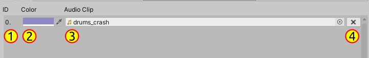

Rhythmos Editor - Importing AudioClips
In order to actually have sounds in our rhythms, we need to import audio clips into RhythmosDatabase.
Go to AudioClips tab
You have two ways to add
AudioReference:
Click in the bottom button with plus sign
+and manually select the desired sound effect in AudioClip fieldOr by drag and drop
AudioClipsto Rhythmos Editor window:- Select your files in Project explorer
- Drag to RhythmosEditor window
- Drop the files inside the scroll view area

- After create and import, it will be added the new AudioReference item to the list. Each number

- The
AudioReferenceindex - Custom color. Colors serve to distinguish notes when you are editing rhythms.
- AudioClip field. If this field is not set and a Rhythm is using will simple not be played. Tip: select short sounds only.
- Remove this
AudioReference. Be careful. Removing one item in the list can damage the rhythms